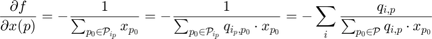
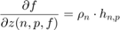
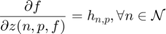
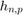

Evalute the objective function and gradient
Contents
Gradient value of the objective function
The upper bound number of non-zero elements in the gradient vector: the gradient on path variable is nonzeros, so there is P components; whether the gradient on node variable is zeros is decided by the node-path incidence matrix, i.e. nnz(I_node_path)*F.
Gradient on x(p) is given by

and gradient on z(n,p,f) is given by

To obtain the derivatives on z, each step we fix the function index f. i.e.

So, we can compute the derivatives for all n and p with fixed f, which consist a matrix , and can be converted into a column vector.